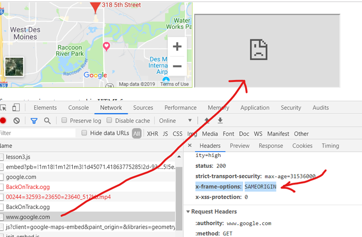

HTML
IFrames
An example of embeding a google map inside an iframe
An example of emberding google in an iframe
oops...
The response headers send x-frame-options:SAMEORIGIN

but Wikipedia does not do that: